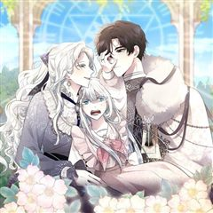
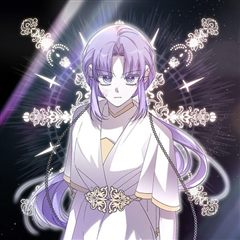
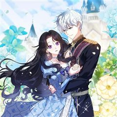

내 남자 주인공의 아내가 되었다 같은 웹툰 추천

내 남자 주인공의 아내가 되었다 · 푸릭 / 초캄 / 은태 / 적발 / 겨울잎
내 남자 주인공의 아내가 되었다 재밌게 봤다면 이 웹툰들도 좋아할 거예요. 같은 장르이면서 힐링, 설렘폭발, 로판 같은 요소가 겹치는 작품을, 겹치는 요소가 많은 순서로 20개 골랐어요.
2026-10-02 기준 · 네이버웹툰·카카오웹툰·레진코믹스 · 성인 작품 제외
내 취향으로 직접 골라 추천받기 →-
1
 네이버웹툰
네이버웹툰피폐물을 힐링물로 만드는 방법
[살아생전 즐겨보던 소설에 환생했다.] 너무 진부하다구요? 아닐 걸요! 왜냐면 그 소설이... 19금 피폐물이거든요...! ̗̀(ꀬ⏖ꀬ∴) 예쁘고 상냥한 여주인공의 동생으로 환생했지만, 언니의 새드엔딩을 지켜볼 수 없었던 레나티스는 언니 대신 잘생긴…
힐링설렘폭발로판판타지로맨스네이버웹툰에서 보기 → -
2

카카오웹툰언니는 여동생을 바르게 키워야 합니다
교통사고를 당한 뒤 정신을 차렸더니, <사랑받는 성녀님> 속 최종 악역의 이복언니가 되어 있었다. 기왕 빙의한 거, 악역의 흑화를 막기 위해 꽃길을 깔아주기로 작정하고 온 마음과 온 힘을 다 해 열심히 노력했는데……. 어쩌다 보니, 피에 미친 살인귀…
힐링설렘폭발로판판타지로맨스카카오웹툰에서 보기 → -
3
 카카오웹툰
카카오웹툰대공님의 애완 수인
황제의 유일한 동복 누이 대공 로잘린 이드리스 아펠루덴은 수인 노예를 선물받는다. 그녀는 수인에게 펜리르라는 이름을 붙여주고, 조금씩 그녀에게 마음을 열기 시작한 펜리르는 그녀를 인생의 단 하나뿐인 반려로 각인하게 된다.
힐링설렘폭발로판판타지로맨스카카오웹툰에서 보기 → -
4

카카오웹툰방구석 아싸인 내가 폭군에게 청혼 받아버렸다
‘귀신 보는 년’ 이라는 꼬리표로 방구석에서 나가지 않던 내가 읽다 만 소설 속에 떨어졌다. 남주인 녹티스 대공에게 죽는 불행한 엑스트라 악역, 플로티 베베니아에게! 무사히 살아남기만 하자고 다짐했건만. “잘 잤나, 부인?” 날 죽이려던 대공과 결혼…
힐링설렘폭발로판판타지로맨스카카오웹툰에서 보기 → -
5
 카카오웹툰
카카오웹툰흑막 공작님의 가족이 되려 합니다
책 속에 환생했다. 그것도 여주인공과 똑같은 희귀병을 가진 시한부 목숨으로. 여주인공은 흑막이 치료제를 구해 주지만. 아직 원작이 시작되지 않았다. ‘그때가 되면 난 죽고 말 거야.’ 로위나는 아직 정신 차리지 못하고 폐인처럼 살고 있는 흑막을 정신…
힐링설렘폭발로판판타지로맨스카카오웹툰에서 보기 → -
6

카카오웹툰악당의 잃어버린 딸이 되었다
소설에 이름조차 나오지 않았던 엑스트라에게 빙의했다. 특징이라고는 저주받았다는 검은 머리에 보라색 눈동자가 전부. 그런데... 내가 소설 속 악당의 잃어버린 딸이라고?! “에리타, 사랑하는 내 딸.” “소중한 내 동생. 내가 꼭 지켜줄게.” 하지만,…
힐링설렘폭발로판판타지로맨스카카오웹툰에서 보기 → -
7
 카카오웹툰
카카오웹툰내 반려동물이 악당이 되었을 때
“이 문이 열리면, 난 곧 죽게 되겠지.” 가족의 학대 끝에 악명 높은 학살자 가문, 에버하르트에 팔려 가게 된 릴리아나. 죽음을 피해 도망친 곳에서 그녀는 자신처럼 홀로 남겨진 작은 회색 강아지를 발견한다. 나와 닮은 처지의 녀석을 정성껏 돌봐주었…
힐링설렘폭발로판판타지로맨스카카오웹툰에서 보기 → -
8
 네이버웹툰
네이버웹툰아이캣치유
“내 마지막 행운이 되어줘서 고마워!” 2015년 9월, 상위 0.1% 수험생 권민은 모의고사 20분을 가져간 환상 속 옆반 학생 차유빈의 정체를 우연히 밝혀내는데. 하루 30분, 킬러 문항보다 어려운 행운과 운명의 미스테리를 파헤치는 두 사람. 줄…
힐링설렘폭발판타지로맨스네이버웹툰에서 보기 → -
9
 카카오웹툰
카카오웹툰엄마가 계약결혼 했다
리리카는 술주정뱅이 어머니를 모시고 하루하루 먹고 사는 빈민가의 소녀다. 그러던 어느날...... “꺄악, 뜨거워! 싫어!” 어머니가 비명을 지르며 잠에서 깨어나더니, “리리,살아있구나, 어려졌니?” 엉뚱한 소리를 하시고 “오늘이 며칠이지?” 정신을…
힐링로판판타지로맨스카카오웹툰에서 보기 → · 엄마가 계약결혼 했다 같은 웹툰 → -
10
 카카오웹툰
카카오웹툰다시 한번, 빛 속으로
성녀로 추앙 받는 동생을 죽이려고 했다는 누명을 썼다. 나를 믿어주는 사람 하나 없었고, 감싸주는 사람 하나 없었다. 심지어 피를 나눈 가족마저도. 14살의 겨울. 이덴베르의 4황녀였던 나는 사람들 앞에서 비참하게 목이 잘렸다. 생을 마감하고, 새로…
힐링로판판타지로맨스카카오웹툰에서 보기 → · 다시 한번, 빛 속으로 같은 웹툰 → -
11
 카카오웹툰
카카오웹툰사랑받는 막내는 처음이라
세계의 멸망을 막을 유일한 희망으로서 모두에게 희생을 강요받는 삶만 99번째. 제발 이번이 끝이길 바랐는데…! "아가씨가 태어나셨어요!" 기어코 100번째 삶을 시작하고 말았다. 어차피 또 영웅 취급하며 희생시키겠지. 그렇게 생각했는데, "무사히 태…
힐링로판판타지로맨스카카오웹툰에서 보기 → · 사랑받는 막내는 처음이라 같은 웹툰 → -
12
 카카오웹툰
카카오웹툰황제궁 옆 마로니에 농장
'태양의 손'을 가진 농사 천재, 헤이즐 메이필드. 할아버지가 준 땅문서를 들고 설레는 마음으로 자신의 농장을 찾아가는데… "그 '대단히 높은 신분의 집주인'이… 황제였어?" 위대한 브라타니아 제국의 젊은 황제 이스칸다. 완전무결한 황궁을 꿈꾸던 그…
힐링로판판타지로맨스카카오웹툰에서 보기 → · 황제궁 옆 마로니에 농장 같은 웹툰 → -
13
 카카오웹툰
카카오웹툰남주를 주웠더니 남편이 생겨버렸다
허영심에 가득 찬 웨르아젤 프로시에 그것이 내 별명이었다. 정확히 말하자면 내가 빙의하기 전 웨르아젤의 별명. 웨르아젤 진 빚을 수습하기 위해 백방으로 돈을 구할 방법을 찾던 도중! 공작가에서 잃어버린 아이를 찾는다는 전단지를 발견했다. 사례금은 빚…
힐링로판판타지로맨스카카오웹툰에서 보기 → · 남주를 주웠더니 남편이 생겨버렸다 같은 웹툰 → -
14
 카카오웹툰
카카오웹툰계모인데, 딸이 너무 귀여워
다이어트도, 업무도 열심히 하면서 평범하게 살아가던 나 이백합…. 과로사로 죽은 줄 알았는데 자신보다 예쁜 의붓딸을 질투한 나머지 딸을 독살하고, 결국 남편에게 처형되는 동화에 빙의했다?! 이대로 처형당할 수 없으니 귀엽고 사랑스러운 딸, 블랑슈와의…
힐링로판판타지로맨스카카오웹툰에서 보기 → · 계모인데, 딸이 너무 귀여워 같은 웹툰 → -
15
 카카오웹툰
카카오웹툰아빠가 힘을 숨김
Q. 믿었던 아빠가 엑스트라가 아닐 때의 심정을 서술하시오. A. 뭐, 뭐야…. 내 ‘지나가던 제국민 1’ 역할 돌려줘요…. 1년 365일 전쟁 중! 하루라도 바람 잘 날 없는 미친 세계관! 이곳에서 엑스트라로 태어났다는 건 축복이었다. “공주~ 일…
힐링로판판타지로맨스카카오웹툰에서 보기 → · 아빠가 힘을 숨김 같은 웹툰 → -
16
 카카오웹툰
카카오웹툰악역 소녀는 사랑받기가 부끄러워요
여주인공 ‘로렛타’를 괴롭히고 철저히 단죄당하는 악랄한 노예 상인의 딸. ‘멜로디’. 나는 살고 싶어서 잘해준 것뿐인데… “로레따는 메로디 절대 안 잊어!” “메로디 없으면 로레따 울 거야!” “그로니까 메로디 여기루 빨리 데려와야 대!” “메로디가…
힐링로판판타지로맨스카카오웹툰에서 보기 → · 악역 소녀는 사랑받기가 부끄러워요 같은 웹툰 → -
17
 카카오웹툰
카카오웹툰대공가에 입양된 성녀님
“그만하고 싶어. 더는… 이용당하면서 살고 싶지 않아.” 성녀의 힘을 가졌음에도 내정된 가짜 성녀를 위해 평생을 감금당한 채 살아야 했다. 괴로움을 견디지 못해 죽고 나면 되돌아왔고, 강제로 반복되는 회귀 끝에 다른 방법을 택한 다이나는 우연히 대공…
힐링로판판타지로맨스카카오웹툰에서 보기 → · 대공가에 입양된 성녀님 같은 웹툰 → -
18
 카카오웹툰
카카오웹툰입양된 며느리는 파양을 준비합니다
남주 데미안을 괴롭히다 고아원에서 쫓겨나는 원생1 엘리의 몸에 빙의했다. 남주의 양부가 될 슈에츠 공작이 데미안을 찾는 데 일조하고 목숨만 부지하고자 했으나… "저 아이도 함께 입양하지. 며느리로 들일 거다." 네? 며느리? 며느리라고요?? 당황스럽…
힐링로판판타지로맨스카카오웹툰에서 보기 → · 입양된 며느리는 파양을 준비합니다 같은 웹툰 → -
19
 카카오웹툰
카카오웹툰신데렐라를 곱게 키웠습니다
유명한 동화가 있다. 아버지와 새어머니가 결혼해 언니들까지 다섯 명의 대가족이 된 마음씨 착한 아가씨. 아버지가 돌아가신 뒤 마음씨 고약한 새어머니와 언니들 밑에서 구박받는 불쌍한 그녀. 바로 그 동화, 신데렐라에 빙의했다. 그런데 하필이면 신데렐라…
힐링로판판타지로맨스카카오웹툰에서 보기 → · 신데렐라를 곱게 키웠습니다 같은 웹툰 → -
20
 카카오웹툰
카카오웹툰남주가 제 건강에 집착합니다
엑스트라로 환생했다. 남주의 존재감 없는 소꿉친구, 소설 초반에 죽는 엑스트라. 시한부라 데드 플래그를 피할 수도 없어서 그러려니 살고 있는데……. “왜 안 건강해?” “건강하란 말이야.” “왜 또 아프고 그래? 허락받고 아프라고.” 남주가 내 건강…
힐링로판판타지로맨스카카오웹툰에서 보기 → · 남주가 제 건강에 집착합니다 같은 웹툰 →